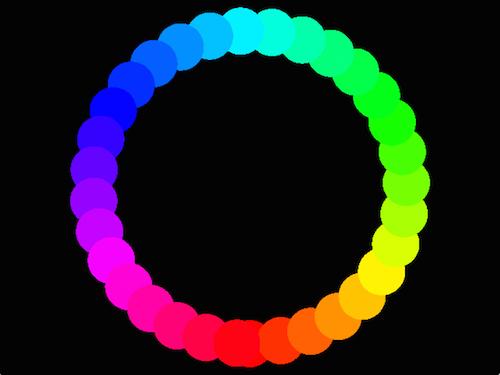
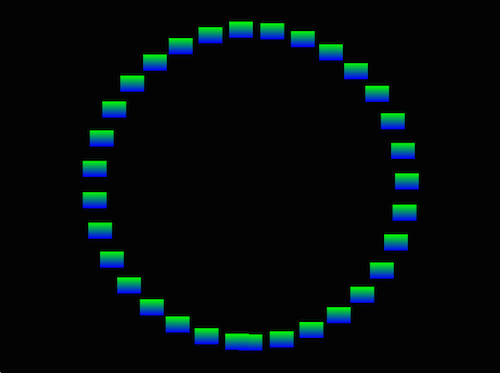

OpenGL in Cinder 0.9
This guide is written with users of previous versions of Cinder in mind, and is meant to aid in the transition to Cinder’s new OpenGL API in version 0.9.0.
OpenGL has evolved considerably in recent versions. And with the introduction of Core Profile in OpenGL 3.2 (and parallel changes in OpenGL ES 2), much of the functionality of previous versions has been removed entirely. Most prominent was the removal of the fixed function pipeline, which gave way to the fully programmable pipeline . This change allows OpenGL to more closely map to the underlying hardware, and is a significant improvement with respect to power and performance. However some of the simpler techniques for interacting with GL in previous versions are no longer available.
With version 0.9.0, Cinder attempts to expose this new power, while still maintaining a relatively easy-to-use API. While this document is not an exhaustive tutorial on the new API, it does cover the core concepts, and should be supplemented with a look at the sample code found in samples/_opengl.
What’s Changed in OpenGL Itself?
Quite a bit of functionality was removed with OpenGL Core Profile. One of the most significant changes is that OpenGL no longer provides a way to draw without a GLSL program (informally called a shader ). Furthermore, immediate mode - functions like glBegin(), glVertex() and glEnd() - are no longer available. OpenGL also no longer has the notion of a vertex normal, a color, or similar. Instead, all such data is generic per-vertex data which the user supplies in the form of GLSL attributes. This vertex data is also only made available to GLSL programs via generic buffers of vertex data called Vertex Buffer Objects (VBOs). Additionally, OpenGL no longer has the concept of the GL_MODELVIEW or GL_PROJECTION matrices. Similar to generic attributes, such data are the responsibility of the programmer to maintain and to pass to her shaders via generic GLSL uniform variables. Much of the global state in previous versions of GL is gone entirely as well. For example, texturing is no longer enabled via glEnable( GL_TEXTURE_2D ). Such state is no longer state at all, but is simply implemented or not implemented in the currently bound GLSL program.
What’s Changed in Cinder?
As you might imagine, Cinder has changed quite a bit too in order to embrace this new philosophy in OpenGL. We’ve attempted to create an API that captures the power of this new way of working, but have also tried to maintain abstractions that are much simpler to use than pure GL. While some things have necessarily become more complex, we believe the benefits easily outweigh the costs, and that you’ll find this new approach to be not only more capable but even more enjoyable to use.
Getting Started
In previous versions of Cinder, the easiest way to draw was to use the GL convenience methods, like gl::drawSolidCircle(). This is still true in 0.9.0, but with a minor caveat. As mentioned previously, OpenGL now requires a shader to be bound, so we’ll need to provide it one. Cinder offers a class called gl::ShaderDef for easily generating common shaders. To draw a solid white circle, this is the code:
gl::bindStockShader( gl::ShaderDef().color() );
gl::drawSolidCircle( vec2( 100, 100 ), 50 );
As in previous versions, gl::drawSolidCircle() takes a center point and a radius. However the preceding line is new. gl::bindStockShader() accepts a
To make our circle red we use the same function we’d use in previous versions, gl::color():
gl::bindStockShader( gl::ShaderDef().color() );
gl::color( 1, 0, 0 );
gl::drawSolidCircle( vec2( 100, 100 ), 50 );
Essentially all GL convenience methods (gl::drawCube(), gl::drawSphere(), gl::drawSolidRect(), etc) still function in 0.9.0, and there are new convenience methods as well. However, using a GL convenience method should always be considered the slow path . They’re fine for initial development or code that is not performance-sensitive, but the techniques we’ll discuss next should always be preferred when speed counts.
Batches
gl::Batch is the fast path in Cinder 0.9.0 for typical cases. An instance of gl::Batch represents the combination of geometry and an associated shader. To get started, let’s optimize our previous use of the convenience method gl::drawSolidCircle().
class MyApp : public App {
…
gl::BatchRef mCircleBatch;
};
void MyApp::setup()
{
gl::GlslProgRef solidShader = gl::getStockShader( gl::ShaderDef().color() );
mCircleBatch = gl::Batch::create( geom::Circle().center( vec2( 100, 100 ) ).radius( 50 ), solidShader );
}
void MyApp::draw()
{
gl::clear();
gl::color( 1, 0, 0 );
mCircleBatch->draw();
}
This code touches on several different new concepts. First, we’re using our ShaderDef slightly differently. Rather than binding it using gl::bindStockShader(), we’re using gl::getStockShader(), which returns a proper GlslProgRef based on a gl::ShaderDef. Next, we construct a gl::Batch. The constructor (called via create()) accepts geometry as the first parameter and a gl::GlslProgRef as the second parameter - in our case the one we just generated with gl::getStockShader().
Let’s look at the first parameter to our Batch construction, the geometry portion: geom::Circle().center( 100, 100 ).radius( 50 ). This uses geom::Circle, which is one of many classes provided with Cinder that can be used to create geometry. Other examples include geom::Sphere,
To draw a gl::Batch we simply use its draw() member method. Notice that we still set the color with gl::color(). Cinder “knows” that the
Transformations
In previous versions of OpenGL (and Cinder), there was a global stack of two matrices, one for the ModelView matrix, and one for the Projection matrix. Users manipulated these stacks with functions like glTranslatef() or in Cinder, gl::translate(). In modern GL these stacks are removed entirely. However Cinder still provides this useful functionality through the same methods - gl::translate(), gl::scale(), gl::rotate(), etc.
One key difference is that Cinder now separates the Model and View matrices. Calls to gl::translate() et al manipulate the active Model matrix; there is no longer the concept of the matrix mode (formerly manipulated with the now defunct glMatrixMode()). Here’s an example; we can adapt the code above to draw a number of circles in a circular arrangement, all using the same gl::Batch.
First a modification to our setup() routine to create our geom::Circle at the default origin, rather than at vec2( 100, 100 ) as previously. We’ll also shrink the radius a bit:
mCircleBatch = gl::Batch::create( geom::Circle().radius( 30 ), solidShader );
And now in draw(), we’ll do the following:
void MyApp::draw()
{
gl::clear();
for( float angle = 0; angle < 2 * M_PI; angle += 0.2f ) {
gl::pushModelMatrix();
gl::translate( getWindowCenter() + 200.0f * vec2( sin( angle ), cos( angle ) ) );
gl::color( Color( CM_HSV, angle / (2 * M_PI), 1, 1 ) );
mCircleBatch->draw();
gl::popModelMatrix();
}
Let’s look at this routine. A for-loop iterates from 0 to 2 pi radians. Within the loop we preserve the current Model matrix using gl::pushModelMatrix(). We then translate the current Model transformation to the window center plus a bit of trigonometry to arrange the circles’ centers in a larger circle of radius 200. Next we set the current color using HSV color, and then draw our gl::Batch. Note that this draw command is “aware” of the current Model matrix (not to mention View and Projection) as well as the current color automatically. Finally, we restore the Model matrix to what it was previous to this iteration of the loop, using gl::popModelMatrix().
Scoped Utilities and State
In Cinder 0.9.0 you’ll see a number of classes which begin with gl::Scoped in the name. Examples include gl::ScopedModelMatrix, gl::ScopedColor, and gl::ScopedTextureBind. While there are other ways to achieve the same thing, these classes are efficient and easy to use. They are designed in accordance with RAII, preserving a given piece of state on instantiation and restoring it on destruction. As an example, let’s rework the previous for-loop to use a gl::ScopedModelMatrix:
for( float angle = 0; angle < 2 * M_PI; angle += 0.2f ) {
gl::ScopedModelMatrix scpModelMtx;
gl::translate( getWindowCenter() + 200.0f * vec2( sin( angle ), cos( angle ) ) );
gl::color( Color( CM_HSV, angle / (2 * M_PI), 1, 1 ) );
mCircleBatch->draw();
}
In this example, creating our variable scpModelMtx preserves the Model matrix at its point of instantiation. We then manipulate the Model matrix using gl::translate(). And when the destructor for scpModelMtx fires at the end of the loop iteration, it will restore the Model matrix to its value when scpModelMtx was instantiated.
Additionally, it’s worth noting that Cinder now caches virtually all state in a class called gl::Context. This allows Cinder to save and restore state quickly without querying GL for the active values. As a result, it’s safe and fast to use these gl::Scoped family of classes for preserving state.
Writing Custom Shaders
While gl::ShaderDef is helpful for basic shaders (in addition to color(), it supports texture() and lambert()) it’s common to write your own GLSL. Let’s look at an example of how to do that.
We’ll keep the same circle example, and write a shader that takes the place of our gl::ShaderDef-created version. For the purposes of this example, we’ll make use of the CI_GLSL() macro, which allows writing GLSL code inline. Our setup routine looks like this now:
void MyApp::setup()
{
gl::GlslProgRef solidShader = gl::GlslProg::create(
// vertex code
CI_GLSL( 150,
uniform mat4 ciModelViewProjection;
in vec4 ciPosition;
in vec4 ciColor;
out lowp vec4 Color;
void main( void )
{
gl_Position = ciModelViewProjection * ciPosition;
Color = ciColor;
}
),
// fragment code
CI_GLSL( 150,
in vec4 Color;
out vec4 oColor;
void main( void )
{
oColor = Color;
}
) );
mCircleBatch = gl::Batch::create( geom::Circle().radius( 30 ), solidShader );
}
And just to reiterate, if we had written files named say, solidColor.vert and solidColor.frag and stored them as files in our assets directory - a more common workflow - we’d see a line like this instead of the CI_GLSL macros:
GlslProgRef solidShader = gl::GlslProg::create( loadAsset( “solidColor.vert” ), loadAsset( “solidColor.frag” ) );
Looking at our GLSL code above, you’ll see a few distinctive things. First, we have both uniforms and attributes with the prefix ci - ciModelViewProjection, as well as attributes ciPosition and ciColor. These names are special, and serve as signals to Cinder to automatically fill in their values appropriately. As you might imagine, ciModelViewProjection is equivalent to the current Model, View and Projection matrices concatenated into a single mat4. If you have been writing GLSL shaders in prior OpenGL versions, you likely used the now defunct gl_ModelViewProjectionMatrix variable for this.
Similarly, there are automatically recognized vertex attributes; in the example above they are ciPosition and ciColor. In the case of ciPosition, this attribute is automatically supplied by our geom::Circle. ciColor is similar but has a unique caveat. If our geom::Source had supplied a color, the shader would have used it. However Cinder automatically supplies the global current color (set via gl::color()) in the absence of a per-vertex color. As an experiment, let’s try slightly different geometry that does supply per-vertex color. If we change the gl::Batch assignment in setup() out like this:
ColorAf green( 0, 1, 0 ), blue( 0, 0, 1 );
mBatch = gl::Batch::create( geom::Rect().colors( green, green, blue, blue ).
rect( Rectf( -15, -10, 15, 10 ) ), solidShader );
We see this:
Here we see the global color is ignored as geom::Rect has generated per-vertex colors upon our request. For the curious, this automatic variable uploading occurs in the gl::Batch::draw() call, and it can be invoked manually in advanced usage scenarios. Furthermore, there are mechanisms for manually configuring the mapping to attributes and uniforms in GlslProg::Format for users that have some reason to use a non - default configuration.
Conclusion
The OpenGL API in Cinder 0.9.0 is quite deep - much more so than can be captured in this post. However hopefully this serves as enough background to dig into the samples, which are the best place to learn until we have more thorough documentation.